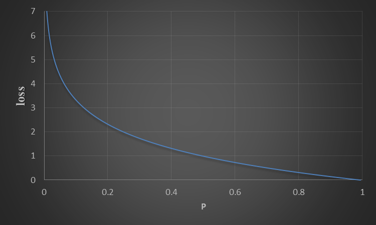

一般我們在進行數學函數運算時，根據假設，會去求函數的最大值或最小值，而在機器學習中也不例外，通常我們會透過解最小值來評估機器學習模型的好壞。
在訓練模型的過程中，我們都希望模型的預測值與實際值是一樣的，但基本上預測值都會與實際值有落差，而這樣的落差，在統計上就稱作殘差(residual)，損失函數就是用來計算殘差的function
在數學上的表示法
假設y表示實際值，ŷ表示預測值。「損失/殘差」數學表示為
$$
loss/residual = y - ŷ
$$
loss/residual越小，表示模型越好
loss function method
回歸問題常用的
- 均方誤差(Mean square error，MSE)
相減平方取平均
MSE
RMSE
- 平均絕對值誤差(Mean absolute error，MAE)
相減掛絕對值取平均

- MAE(藍色線) 在進行梯度下降時，梯度都是定值，因此在越靠近解時，容易會在解的左右側跳(尤其是learning rate設定過大的情況下)，但outlier比較不敏感
- MSE(紅色線) 梯度非定值，根據learning rate會慢慢趨向解，相較MAE容易找到穩定的解，但對outlier比較敏感
分類問題常用的
交叉熵(cross-entropy) 評估模型分類的函數
在模型分類上，我們會希望分類的錯誤率越低越好，但純粹就錯誤率來評估模型會有問題
如上圖，雖然左右兩個模型的錯誤率都相同，但實際上其實是模型二比較好，可以仔細看一下兩邊模型預測的機率值，會發現模型二的預測機率相對模型一來說是更準確的，例如:data1的正解為男生，在模型一上預測男生的機率是0.4，模型二是0.7。
因此單就錯誤率是沒辦法評估模型分類的好壞，在訓練模型時，模型本身也會沒有訓練的方向(因為結果分析上，錯就是錯，對就是對，沒有分程度)，就沒辦法更新參數最佳化模型。
- information gain(訊息量): 機率越隨機，訊息量越大
假設X是一個隨機變數，機率密度函數為p(x)= p(X=x)
A考試及格的機率是p(xA)=0.4，B考試及格的機率是p(xB)=0.99。
這時候I(xA)=-log(0.4)= 1.322，I(xB)=-log(0.99)= 0.014
可以想成是一件事如果發生的狀況很穩定，我們就不會去在意，因為事情本身只會穩定發生單一一個現象，訊息量就比較少，A生的成績忽高忽低，有及格、不及格兩種可能，因此訊息量較大。
- Entropy(訊息量和熵) :
兩種解釋:
接收的所有訊息中所包含的資訊的平均量
解釋資料的亂度或不確定性
範例
Entropy越接近1，表示越難猜測(不確定性越大)
回到正題
cross-entropy 數值越小，表示模型越好
範例
機率與cross-entropy的關係圖
